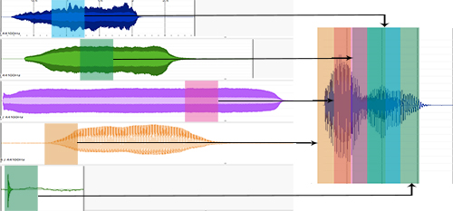

A python script for generating granular synthesis driven representations of audio files based on audio database analysis.
This script was developed to explore the creative potential of combining short-time audio analyses with granular synthesis, to synthesize perceptually related representations of target audio files. Through use of analysed databases of varying sizes, an output can be generated that represents a mix of the spectral and temporal features of the original target sound and the corpus of source sounds.
To achieve this, a technique known as “concatenative synthesis” is used. This form of synthesis combines the ability to window and join small segments of sound to create a new sound (a process known as granular synthesis), with audio analysis techniques capable of describing a sound in order to differentiate it from others. By analysing small segments in a target sound for their perceptual characteristics (such as pitch, timbre and loudness), it is then possible to compare these segments to a collection of source sounds to find perceptually similar segments. From this, the most perceptually similar matches can be taken and joined using granular synthesis techniques in order to achieve the final result.
{kind=link}